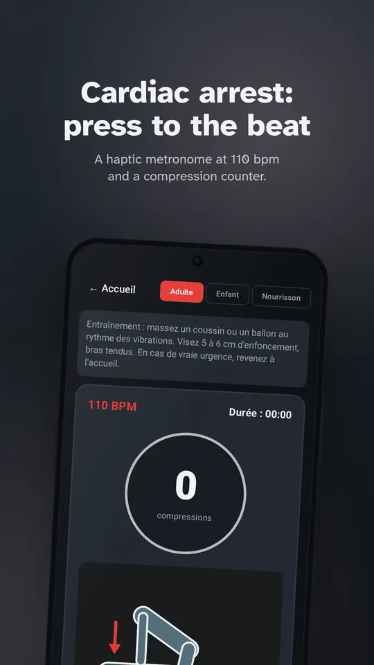
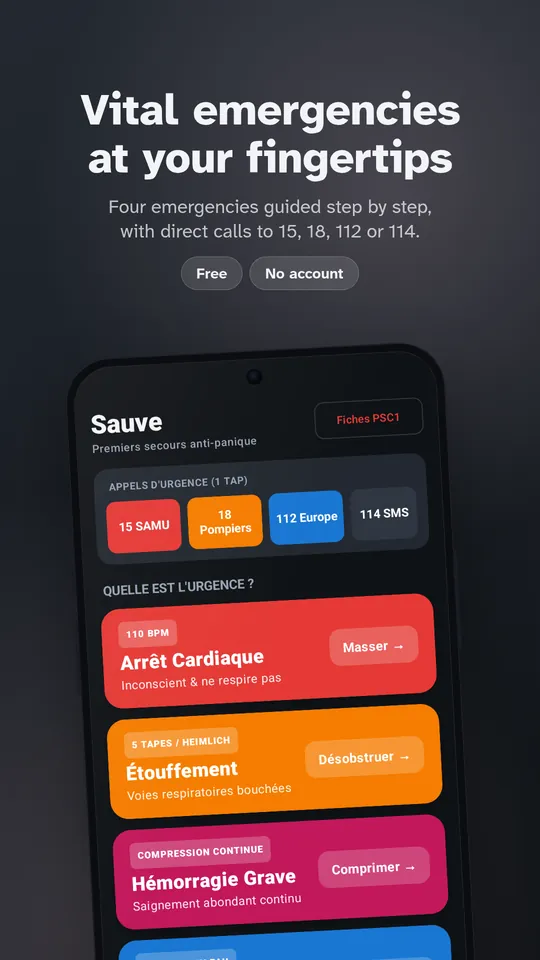
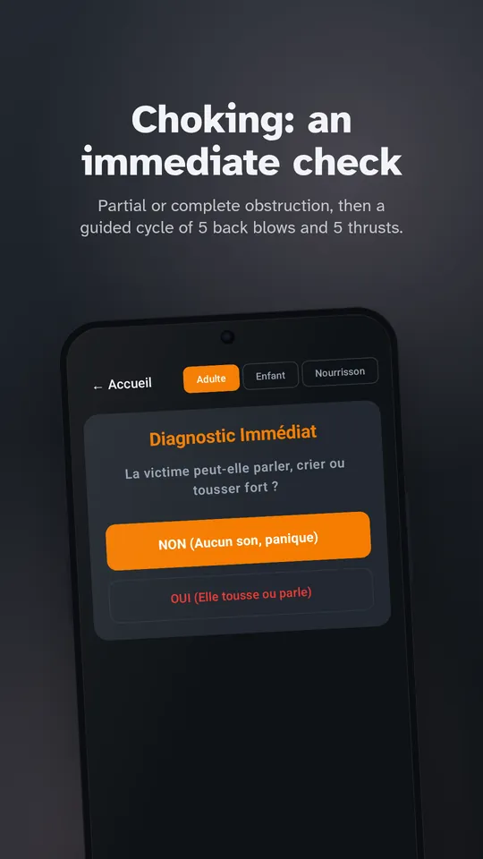
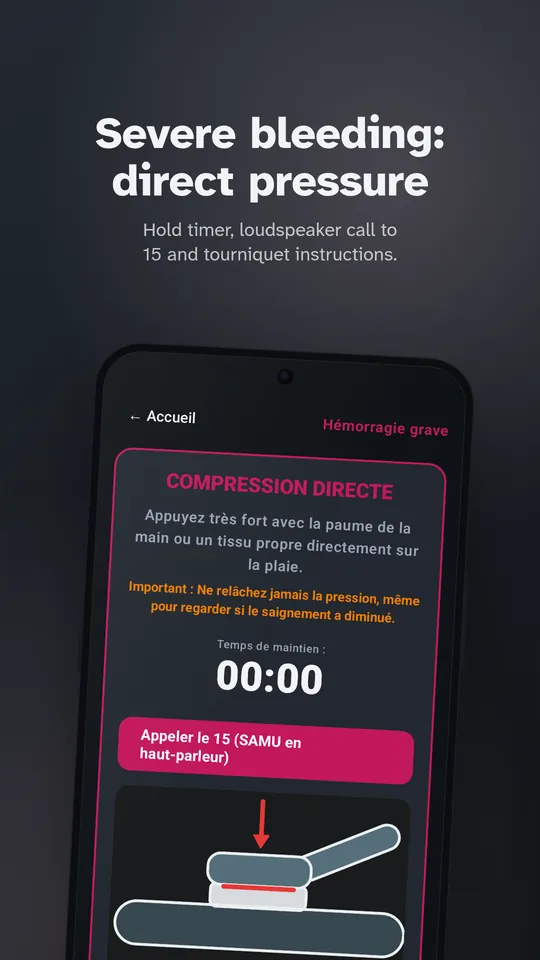
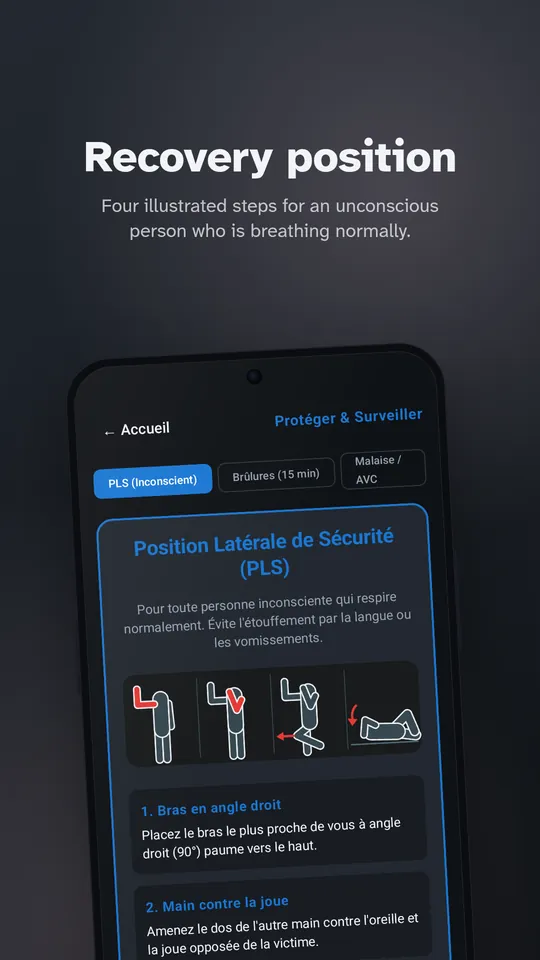
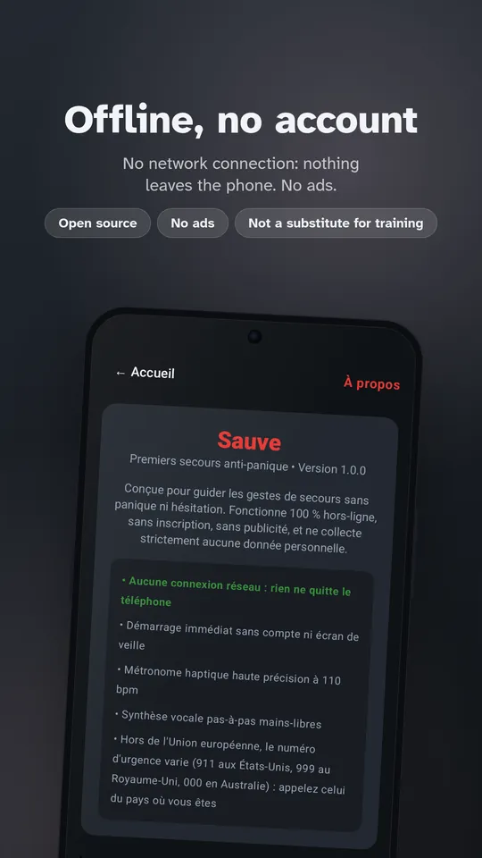

Cardiac arrest
Consciousness and breathing check, call for help, 110 bpm metronome, compression count (continuous or 30:2), rescuer relay every 2 minutes and a defibrillator guide.
Anti-panic first aid
Sauve guides you step by step, with voice and vibration, through cardiac arrest, choking, severe bleeding and unconsciousness. It opens instantly and works without a network.

Each screen shows only what to do right now.
Consciousness and breathing check, call for help, 110 bpm metronome, compression count (continuous or 30:2), rescuer relay every 2 minutes and a defibrillator guide.
Partial or complete obstruction, a cycle of 5 back blows and 5 abdominal thrusts, an infant variation, and a one-tap switch if the person loses consciousness.
Immediate direct pressure, a hold timer, tourniquet guidance with the time logged, and notes for the medical handover.
Step-by-step recovery position, breathing monitoring, 15-minute cooling for burns, and the FAST stroke check.
The guidance is read aloud by your phone's speech engine, so your eyes stay on the person.
A 110 beats-per-minute metronome pulses in your pocket and sets the pace for compressions.
Direct access to 15, 18, 112 and 114 (text message for deaf and hard-of-hearing people).





The procedures follow the European Resuscitation Council recommendations (ERC 2021) and the French national first aid references (PSC1).
Sauve does not replace first aid training. In an emergency, call 15 or 112 first, then follow the app's instructions.